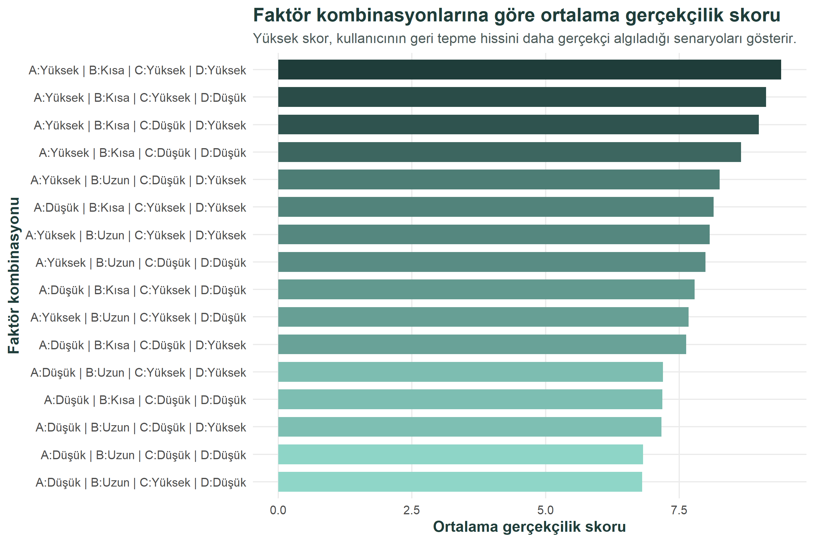
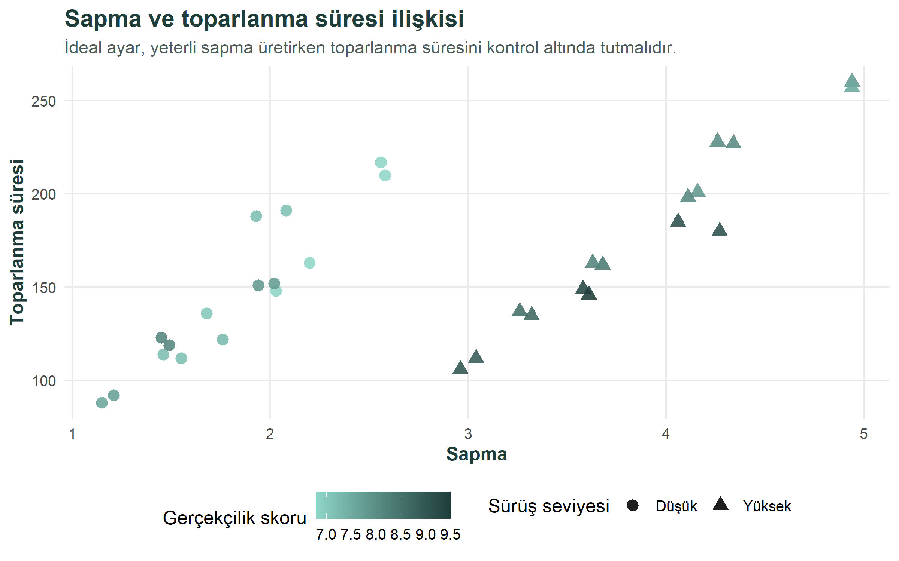
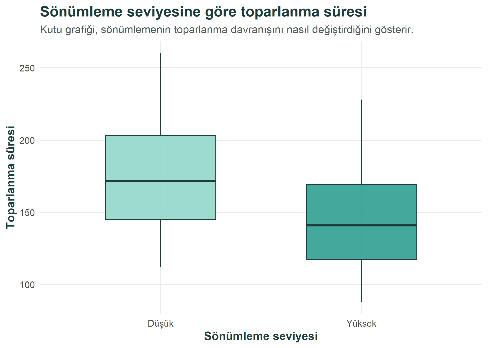
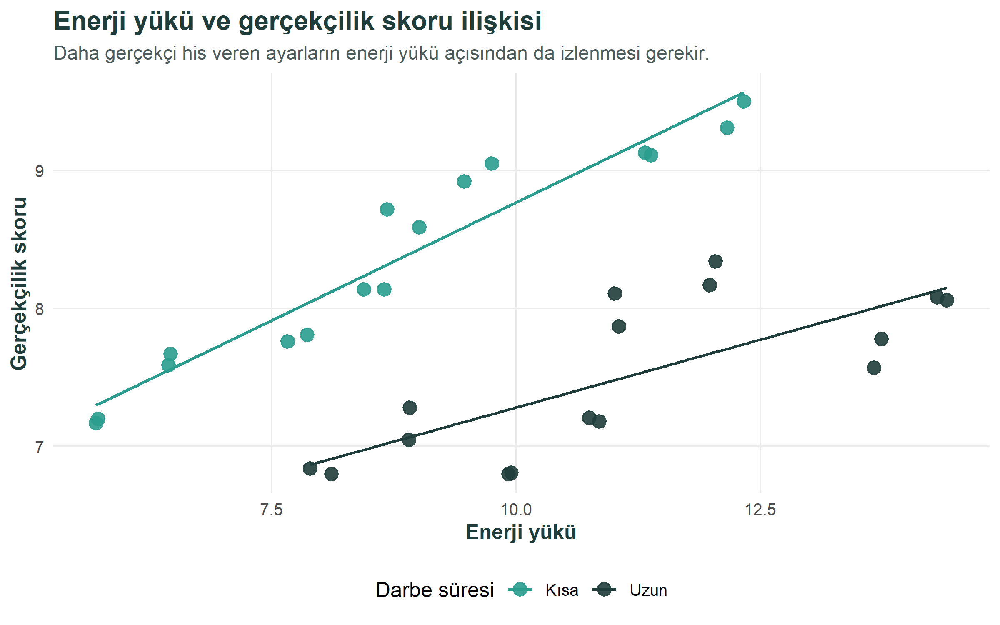
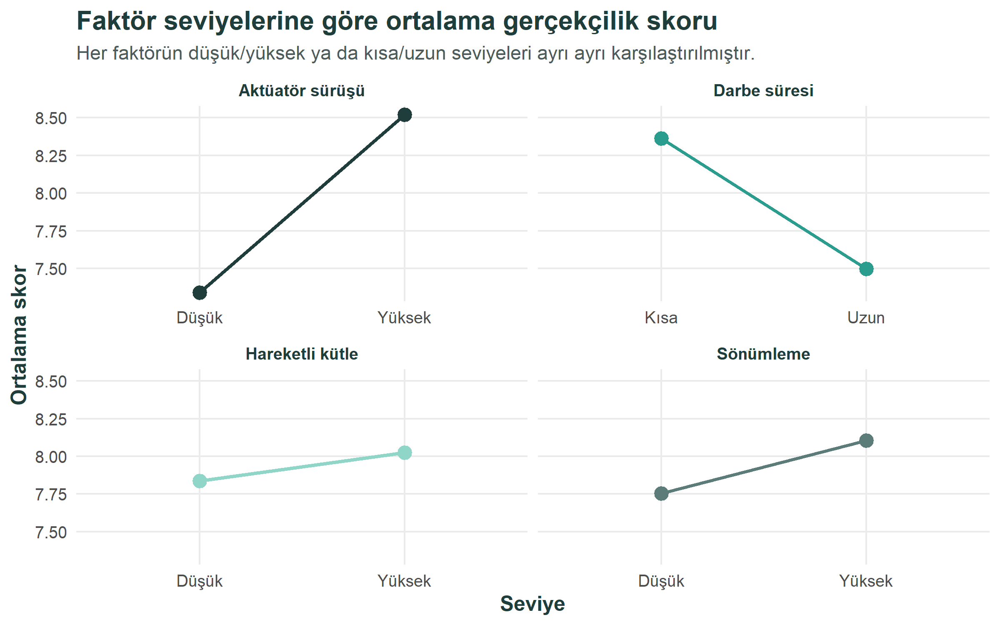
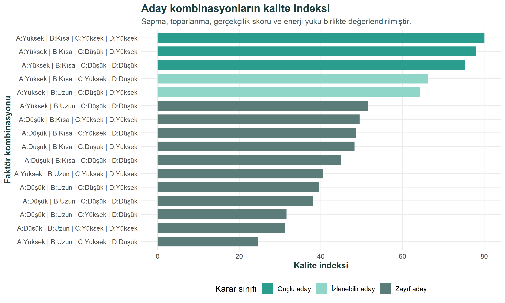

| Deney sirasi | Standart sira | Tekrar | A - Aktuator surusu | B - Darbe suresi | C - Hareketli kutle | D - Sonumleme | Sapma | Toparlanma | Gercekcilik skoru | Enerji yuku |
|---|---|---|---|---|---|---|---|---|---|---|
| 1 | 1 | 1 | Dusuk | Kisa | Dusuk | Dusuk | 1.46 | 114 | 7.20 | 5.72 |
| 2 | 1 | 2 | Dusuk | Kisa | Dusuk | Dusuk | 1.55 | 112 | 7.17 | 5.70 |
| 3 | 2 | 1 | Yuksek | Kisa | Dusuk | Dusuk | 3.26 | 137 | 8.59 | 9.01 |
| 4 | 2 | 2 | Yuksek | Kisa | Dusuk | Dusuk | 3.32 | 135 | 8.72 | 8.68 |
| 5 | 3 | 1 | Dusuk | Uzun | Dusuk | Dusuk | 2.20 | 163 | 6.80 | 8.11 |
| 6 | 3 | 2 | Dusuk | Uzun | Dusuk | Dusuk | 2.03 | 148 | 6.84 | 7.89 |
| 7 | 4 | 1 | Yuksek | Uzun | Dusuk | Dusuk | 4.16 | 201 | 7.87 | 11.05 |
| 8 | 4 | 2 | Yuksek | Uzun | Dusuk | Dusuk | 4.11 | 198 | 8.11 | 11.01 |
o;?— title: “Elektronik Egitim Simulatorunde Geri Tepme Davranisinin Sentetik Veri ile Is Analitigi” subtitle: “MUY665 Is Analitigi Donem Projesi” author: - “Eylul Isil Altiparmak” - “Gizem Cetin” - “Selcan Islek” date: “2026-06-07” number-sections: true format: html: toc: true toc-location: left code-fold: true code-tools: true theme: simplex execute: echo: true warning: false message: false —
Proje Genel Bakis ve Kapsami
Bu projede, muhimmat kullanmayan elektronik bir egitim simulatorunde geri tepme davranisini temsil eden sentetik bir deney veri seti R programlama dili ile analiz edilmektedir. Elektronik egitim simulatorlerinde temel amac, kullaniciya guvenli bir ortamda gercekci bir egitim deneyimi sunmaktir. Bu tur sistemlerde geri tepme hissinin cok zayif olmasi egitim gercekciligini azaltabilir; buna karsilik geri tepme davranisinin cok sert, uzun sureli veya kontrolsuz olmasi kullanici deneyimini ve sistem guvenilirligini olumsuz etkileyebilir.
Bu nedenle bu calismada geri tepme davranisi tek bir performans gostergesiyle degil, birden fazla kriterin birlikte degerlendirilmesiyle ele alinmistir. Analizde sapma, toparlanma suresi, gercekcilik skoru ve enerji yuku birlikte incelenmektedir. Sapma ve gercekcilik skoru egitim hissinin yeterliligini temsil ederken, toparlanma suresi ve enerji yuku sistemin kontrol edilebilirligi ve uygulanabilirligi hakkinda bilgi vermektedir.
Projenin temel karar sorusu sudur: Farkli faktor seviyeleri arasinda, sentetik deney senaryosu icinde en dengeli geri tepme davranisini hangi ayar kombinasyonu saglamaktadir? Bu soruya yanit verebilmek icin faktor seviyeleri arasindaki farklar ozet tablolar, grafikler ve coklu yanit kalite indeksi yardimiyla incelenmistir.
Calisma kapsaminda dort temel faktor ele alinmistir: aktuator surus seviyesi, darbe suresi, hareketli kutle seviyesi ve sonumleme seviyesi. Bu faktorlerin her biri iki seviyede degerlendirilmis ve her kombinasyon icin iki tekrar olacak sekilde toplam 32 gozlemden olusan bir sentetik veri seti kullanilmistir.
Calismanin ana odagi ileri istatistiksel testlerden cok, MUY665 dersinde islenen is analitigi surecini uygulamaktir. Bu nedenle proje; veri okuma, veri duzenleme, kesifsel veri analizi, gorsellestirme, ozet tablo olusturma ve karar destegi adimlari uzerinden ilerlemektedir. R tarafinda readr, dplyr, tidyr, stringr ve ggplot2 paketleri kullanilarak ders notlarinda yer alan temel veri analitigi yaklasimlari uygulanmistir.
Veri seti sentetik/senaryo tabanli olarak hazirlanmistir, bulgular gercek bir fiziksel sistemin kesin sonucu olarak yorumlanmamalidir. Buna karsilik calisma, gercek test verisi elde edildiginde ayni analiz akisinin nasil yeniden calistirilabilecegini gosteren tekrarlanabilir bir is analitigi ornegi sunmaktadir.
Veri
Veri Kaynagi
Bu calismada kullanilan veri seti gercek saha veya test olcumu degildir. Veri, muhimmat kullanmayan elektronik egitim simulatorunun geri tepme davranisini temsil etmek amaciyla olusturulmus sentetik/senaryo tabanli deney verisidir.
Bu nedenle bulgular, gercek bir fiziksel sistemin kesin performans kaniti olarak degil, R ile is analitigi yontemlerinin yeniden uretilebilir bir uygulamasi olarak yorumlanmalidir.
Veri kaynaginin sentetik olarak secilmesinin temel nedeni, gercek bir prototip veya saha testinden olcum alinmamis olmasidir. Bu durum, calismanin sinirliligi olmakla birlikte ayni zamanda ders kapsaminda ogrenilen R tabanli veri analitigi surecini kontrollu bir veri seti uzerinde uygulama olanagi saglamaktadir. Bu nedenle veri seti, gercek sistem davranisini birebir temsil eden bir olcum kaydi olarak degil, karar analitigi yaklasimini gostermek icin olusturulmus bir calisma verisi olarak ele alinmistir.
Veri Hakkinda Genel Bilgiler
Veri seti dort faktor ve dort yanit degiskeninden olusmaktadir. Dort faktorun her biri iki seviyede ele alinmis, her kombinasyon iki tekrar ile gozlemlenmis ve toplam 32 gozlem elde edilmistir.
Faktorler, sistem uzerinde degistirilebilir ayarlari temsil etmektedir:
A - Aktuator surus seviyesi: Aktuatorun geri tepme etkisini olusturmak icin ne kadar guclu calistirildigini ifade eder. Dusuk surus seviyesi daha yumusak bir tepki uretirken, yuksek surus seviyesi daha belirgin bir geri tepme hissi olusturabilir.B - Darbe suresi: Geri tepme etkisinin ne kadar sureyle uygulandigini gosterir. Kisa darbe suresi daha ani ve kontrollu bir etkiyi, uzun darbe suresi ise daha yayilmis ve toparlanmasi daha zor olabilecek bir etkiyi temsil eder.C - Hareketli kutle seviyesi: Simulator icinde geri tepme hissini olusturan hareketli parcanin kutle duzeyini temsil eder. Daha yuksek kutle, geri tepme hissini guclendirebilir; ancak sistemin toparlanma davranisini da etkileyebilir.D - Sonumleme seviyesi: Geri tepme sonrasi hareketin ne kadar hizli bastirildigini veya dengelendigini ifade eder. Yuksek sonumleme, sistemin daha kontrollu bicimde toparlanmasina yardimci olabilir.
Yanit degiskenleri ise her deney kosulunda sistemin nasil davrandigini olcmek icin kullanilan performans gostergeleridir:
Sapma: Geri tepme sonrasinda nisan hattinda veya simulator ekseninde olusan sapma duzeyini temsil eder. Cok dusuk sapma gercekcilik hissini azaltabilir; cok yuksek sapma ise kontrolu zorlastirabilir.Toparlanma: Geri tepme etkisinden sonra sistemin yeniden kararli hale gelmesi icin gereken sureyi temsil eder. Daha dusuk toparlanma suresi, kullanicinin bir sonraki harekete daha hizli hazirlanabilmesi acisindan avantajlidir.Skor: Geri tepme davranisinin kullanici tarafindan ne kadar gercekci algilanabilecegini temsil eden sentetik bir degerlendirme skorudur. Bu degiskende yuksek deger daha olumlu kabul edilmistir.Enerji: Geri tepme etkisini olusturmak icin gereken enerji yukunu temsil eder. Enerji degerinin cok yukselmesi, gercek bir sistemde batarya tuketimi, isinma veya mekanik zorlanma gibi konular acisindan risk olusturabilir.
Bu yapi, her faktor kombinasyonunun sistem davranisi uzerindeki etkisini karsilastirmaya imkan verir. Ornegin yuksek surus seviyesi geri tepme hissini artirabilir; ancak ayni zamanda enerji yukunu veya toparlanma suresini de artirabilir. Benzer sekilde yuksek sonumleme, sistemin daha kontrollu toparlanmasina yardimci olabilir fakat gercekcilik algisi uzerindeki etkisi diger faktorlerle birlikte degerlendirilmelidir. Bu nedenle veri seti, tek degiskenli bir siralama yapmak yerine cok kriterli bir karar problemi olarak yorumlanmistir.
Veri Okuma ve On Isleme
Veriler CSV formatinda R ortamina aktarilmistir. Ders notlarinda yer alan readr, dplyr, tidyr ve stringr paketleri kullanilarak veri okunmus, faktor degiskenleri duzenlenmis, kombinasyon etiketi olusturulmus ve grafikler icin uzun formata cevrilmistir.
On isleme asamasinda oncelikle veri setinde eksik deger olup olmadigi kontrol edilmistir. Daha sonra A, B, C ve D degiskenleri karakter veri tipinden faktor yapisina donusturulmustur. Bu donusum onemlidir; cunku bu degiskenler sayisal buyukluk degil, kategorik deney seviyelerini temsil etmektedir. Ayrica grafiklerde ve ozet tablolarda daha okunabilir bir yapi elde etmek icin her satirda faktor kombinasyonunu gosteren ek bir etiket olusturulmustur.
Grafik ve ozet analizlerde daha esnek calisabilmek icin veri seti uzun formata da cevrilmistir. Boylece Sapma, Toparlanma, Skor ve Enerji degiskenleri ayni yapi icinde karsilastirilabilir hale getirilmistir. Bu adim, ders notlarinda anlatilan tidy data yaklasimina uygun bir duzenleme adimidir.
Asagidaki tablo, analizde kullanilan 32 gozlemli ham sentetik veri setinin tamamini gostermektedir. Tabloda her satir bir deney kosulunu; faktor sutunlari ilgili ayari; son dort sutun ise bu ayar altinda elde edilen sentetik yanit degerlerini gostermektedir.
| Deney sirasi | Standart sira | Tekrar | A - Aktuator surusu | B - Darbe suresi | C - Hareketli kutle | D - Sonumleme | Sapma | Toparlanma | Gercekcilik skoru | Enerji yuku |
|---|---|---|---|---|---|---|---|---|---|---|
| 1 | 1 | 1 | Dusuk | Kisa | Dusuk | Dusuk | 1.46 | 114 | 7.20 | 5.72 |
| 2 | 1 | 2 | Dusuk | Kisa | Dusuk | Dusuk | 1.55 | 112 | 7.17 | 5.70 |
| 3 | 2 | 1 | Yuksek | Kisa | Dusuk | Dusuk | 3.26 | 137 | 8.59 | 9.01 |
| 4 | 2 | 2 | Yuksek | Kisa | Dusuk | Dusuk | 3.32 | 135 | 8.72 | 8.68 |
| 5 | 3 | 1 | Dusuk | Uzun | Dusuk | Dusuk | 2.20 | 163 | 6.80 | 8.11 |
| 6 | 3 | 2 | Dusuk | Uzun | Dusuk | Dusuk | 2.03 | 148 | 6.84 | 7.89 |
| 7 | 4 | 1 | Yuksek | Uzun | Dusuk | Dusuk | 4.16 | 201 | 7.87 | 11.05 |
| 8 | 4 | 2 | Yuksek | Uzun | Dusuk | Dusuk | 4.11 | 198 | 8.11 | 11.01 |
| 9 | 5 | 1 | Dusuk | Kisa | Yuksek | Dusuk | 1.94 | 151 | 7.81 | 7.86 |
| 10 | 5 | 2 | Dusuk | Kisa | Yuksek | Dusuk | 2.02 | 152 | 7.76 | 7.66 |
| 11 | 6 | 1 | Yuksek | Kisa | Yuksek | Dusuk | 4.06 | 185 | 9.11 | 11.38 |
| 12 | 6 | 2 | Yuksek | Kisa | Yuksek | Dusuk | 4.27 | 180 | 9.13 | 11.32 |
| 13 | 7 | 1 | Dusuk | Uzun | Yuksek | Dusuk | 2.58 | 210 | 6.80 | 9.92 |
| 14 | 7 | 2 | Dusuk | Uzun | Yuksek | Dusuk | 2.56 | 217 | 6.81 | 9.95 |
| 15 | 8 | 1 | Yuksek | Uzun | Yuksek | Dusuk | 4.94 | 260 | 7.78 | 13.74 |
| 16 | 8 | 2 | Yuksek | Uzun | Yuksek | Dusuk | 4.94 | 257 | 7.57 | 13.66 |
| 17 | 9 | 1 | Dusuk | Kisa | Dusuk | Yuksek | 1.15 | 88 | 7.59 | 6.44 |
| 18 | 9 | 2 | Dusuk | Kisa | Dusuk | Yuksek | 1.21 | 92 | 7.67 | 6.46 |
| 19 | 10 | 1 | Yuksek | Kisa | Dusuk | Yuksek | 3.04 | 112 | 8.92 | 9.47 |
| 20 | 10 | 2 | Yuksek | Kisa | Dusuk | Yuksek | 2.96 | 106 | 9.05 | 9.75 |
| 21 | 11 | 1 | Dusuk | Uzun | Dusuk | Yuksek | 1.76 | 122 | 7.28 | 8.91 |
| 22 | 11 | 2 | Dusuk | Uzun | Dusuk | Yuksek | 1.68 | 136 | 7.05 | 8.90 |
| 23 | 12 | 1 | Yuksek | Uzun | Dusuk | Yuksek | 3.68 | 162 | 8.34 | 12.04 |
| 24 | 12 | 2 | Yuksek | Uzun | Dusuk | Yuksek | 3.63 | 163 | 8.17 | 11.98 |
| 25 | 13 | 1 | Dusuk | Kisa | Yuksek | Yuksek | 1.45 | 123 | 8.14 | 8.65 |
| 26 | 13 | 2 | Dusuk | Kisa | Yuksek | Yuksek | 1.49 | 119 | 8.14 | 8.44 |
| 27 | 14 | 1 | Yuksek | Kisa | Yuksek | Yuksek | 3.58 | 149 | 9.31 | 12.16 |
| 28 | 14 | 2 | Yuksek | Kisa | Yuksek | Yuksek | 3.61 | 146 | 9.50 | 12.33 |
| 29 | 15 | 1 | Dusuk | Uzun | Yuksek | Yuksek | 1.93 | 188 | 7.21 | 10.75 |
| 30 | 15 | 2 | Dusuk | Uzun | Yuksek | Yuksek | 2.08 | 191 | 7.18 | 10.85 |
| 31 | 16 | 1 | Yuksek | Uzun | Yuksek | Yuksek | 4.34 | 227 | 8.08 | 14.31 |
| 32 | 16 | 2 | Yuksek | Uzun | Yuksek | Yuksek | 4.26 | 228 | 8.06 | 14.41 |
veri_ornek <- read_csv(proje_yolu("data/03_m4_temiz_veri.csv"), show_col_types = FALSE)
veri_ornek <- veri_ornek |>
mutate(
A = factor(A, levels = c("Dusuk", "Yuksek")),
B = factor(B, levels = c("Kisa", "Uzun")),
C = factor(C, levels = c("Dusuk", "Yuksek")),
D = factor(D, levels = c("Dusuk", "Yuksek")),
kombinasyon = str_c("A=", A, " | B=", B, " | C=", C, " | D=", D)
)
eksik_deger_tablo |>
tablo_html("On isleme sonrasi eksik deger kontrolu")| Degisken | Eksik deger sayisi |
|---|---|
| Run | 0 |
| Std | 0 |
| Rep | 0 |
| A | 0 |
| B | 0 |
| C | 0 |
| D | 0 |
| Sapma | 0 |
| Toparlanma | 0 |
| Skor | 0 |
| Enerji | 0 |
| kombinasyon | 0 |
Kesifsel Veri Analizi
Ilk adimda veri setinin genel yapisi ve sayisal degiskenlerin temel ozetleri incelenmistir. Bu adim, hangi degiskenlerin karar acisindan daha belirleyici olabilecegini anlamak icin kullanilmistir.
Kesifsel veri analizi, bu projede yalnizca tablo uretmek icin degil, sonraki grafik ve karar adimlarini yonlendirmek icin kullanilmistir. Ortalama, minimum ve maksimum degerler incelenerek degiskenlerin hangi aralikta degistigi gorulmustur. Boylece ornegin gercekcilik skoru yuksek olan ayarlarin enerji yuku bakimindan da kabul edilebilir olup olmadigi tartisilabilir hale gelmistir.
| Gozlem sayisi | Sapma ort. | Sapma min. | Sapma maks. | Toparlanma ort. | Toparlanma min. | Toparlanma maks. | Skor ort. | Skor min. | Skor maks. | Enerji ort. | Enerji min. | Enerji maks. |
|---|---|---|---|---|---|---|---|---|---|---|---|---|
| 32 | 2.85 | 1.15 | 4.94 | 161.62 | 88 | 260 | 7.93 | 6.8 | 9.5 | 9.95 | 5.7 | 14.41 |
Faktor seviyelerine gore ortalamalar incelendiginde, ozellikle surus seviyesi ve darbe suresinin sapma, toparlanma ve gercekcilik skoru uzerinde belirgin farklar olusturdugu gorulmektedir.
Bu tablo, her faktorun tek basina ortalama etkisini gormeye yardimci olur. Ancak faktorlerin birlikte calistigi unutulmamalidir. Bir ayarin iyi veya kotu olarak siniflandirilmasi yalnizca surus seviyesi ya da darbe suresine bagli degildir; kutle ve sonumleme seviyesi de sonuclari degistirebilir. Bu nedenle grafiklerle analiz bolumunde degiskenler birlikte yorumlanmistir.
| Faktor | Seviye | Ortalama sapma | Ortalama toparlanma | Ortalama skor | Ortalama enerji |
|---|---|---|---|---|---|
| Aktuator surusu | Dusuk | 1.82 | 145.38 | 7.34 | 8.26 |
| Aktuator surusu | Yuksek | 3.88 | 177.88 | 8.52 | 11.64 |
| Darbe suresi | Kisa | 2.52 | 131.31 | 8.36 | 8.81 |
| Darbe suresi | Uzun | 3.18 | 191.94 | 7.50 | 11.09 |
| Hareketli kutle | Dusuk | 2.58 | 136.81 | 7.84 | 8.82 |
| Hareketli kutle | Yuksek | 3.13 | 186.44 | 8.02 | 11.09 |
| Sonumleme | Dusuk | 3.09 | 176.25 | 7.75 | 9.54 |
| Sonumleme | Yuksek | 2.62 | 147.00 | 8.11 | 10.37 |
Bu bolumdeki tablolar, Grafik 1’in temelini olusturmaktadir. Once her faktor seviyesi ve her kombinasyon icin sapma, toparlanma, gercekcilik skoru ve enerji degerleri ozetlenmistir. Daha sonra ozellikle Skor degiskeni kullanilarak her faktor kombinasyonunun ortalama gercekcilik skoru hesaplanmistir. Grafik 1, bu hesaplanan ortalama gercekcilik skorlarini gorsellestirerek hangi ayar kombinasyonlarinin kullanici algisi acisindan daha guclu gorundugunu karsilastirmali bicimde gostermektedir.
Grafiklerle Analiz
Bu bolumde grafiklerde ve tablolarda ortak bir yesil/teal renk standardi kullanilmistir. Koyu yesil ana vurgu ve baslik rengini, canli yesil guclu sonuclari, mint tonu orta seviyedeki durumlari, notr yesil-gri ton ise daha dusuk performans gosteren adaylari temsil etmektedir. Boylece farkli grafiklerde kullanilan renklerin ayni gorsel dil icinde okunmasi amaclanmistir.
Grafik 1: Faktor Kombinasyonlarina Gore Gercekcilik Skoru
Grafiklerde kullanilan kisaltmalar veri setindeki faktorleri temsil etmektedir: A aktuator surus seviyesini, B darbe suresini, C hareketli kutle seviyesini ve D sonumleme seviyesini ifade etmektedir. Ornegin A:Yuksek | B:Kisa | C:Yuksek | D:Yuksek ifadesi; aktuator surusunun yuksek, darbe suresinin kisa, hareketli kutlenin yuksek ve sonumlemenin yuksek oldugu ayar kombinasyonunu gostermektedir.

Bu grafik, gercekcilik skorunun faktor kombinasyonlarina gore degistigini gostermektedir. En yuksek skorlar genellikle surus seviyesinin yuksek ve darbe suresinin kisa oldugu kombinasyonlarda ortaya cikmaktadir. Bu durum, sentetik senaryoda geri tepme hissinin guclu fakat kontrol edilebilir oldugu ayarlarin daha olumlu degerlendirildigini gostermektedir.
Grafik ayni zamanda tum kombinasyonlarin birbirine yakin performans gostermedigini de ortaya koymaktadir. Bazi ayarlar yuksek gercekcilik saglarken bazilari belirgin bicimde geride kalmaktadir. Bu fark, karar vericinin yalnizca faktor seviyelerini tek tek degil, kombinasyon mantigiyla degerlendirmesi gerektigini gostermektedir.
Grafik 1’de ust siralarda yer alan kombinasyonlar incelendiginde, yuksek aktuator surus seviyesinin gercekcilik algisini artiran onemli bir unsur oldugu gorulmektedir. Ancak yalnizca surus seviyesinin yuksek olmasi yeterli degildir; darbe suresinin kisa olmasi da ayarin daha dengeli algilanmasina katki saglamaktadir. Uzun darbe suresi kullanilan bazi kombinasyonlarda gercekcilik skoru dusmektedir. Bu durum, geri tepme etkisinin guclu olmasinin yaninda suresinin de kontrol edilebilir olmasi gerektigini gostermektedir.
Kutle ve sonumleme seviyeleri ise ust siralardaki kombinasyonlarin kendi icindeki siralamasini degistirmektedir. Ozellikle yuksek sonumleme, geri tepme sonrasi sistemin daha kontrollu davranmasina katki sundugu icin gercekcilik algisini dolayli olarak destekleyebilir. Bu nedenle Grafik 1, tek bir faktorun etkisinden cok faktorlerin birlikte olusturdugu ayar profilinin onemli oldugunu gostermektedir.
Grafik 2: Sapma ve Toparlanma Suresi Iliskisi

Sapma ile toparlanma suresi birlikte incelendiginde, daha yuksek sapma ureten ayarlarin her zaman daha iyi olmadigi gorulmektedir. Cunku yuksek sapma, toparlanma suresini uzatarak kullanici kontrolunu zorlastirabilir. Bu nedenle karar yalnizca tek bir degiskene gore verilmemelidir.
Bu grafik is analitigi acisindan onemli bir denge problemini gostermektedir. Egitim simulatorunde sapmanin cok dusuk olmasi gercekcilik hissini zayiflatabilir; ancak sapmanin cok yuksek olmasi da kullanicinin hedefe geri donmesini zorlastirabilir. Bu nedenle ideal ayar, yuksek sapma ureten degil, yeterli sapma ile makul toparlanma suresini birlikte saglayan ayardir.
Grafik 2’de noktalarin konumu, her deney kosulunda sapma ve toparlanma suresinin birlikte nasil degistigini gostermektedir. Renk tonlari gercekcilik skorunu temsil ettigi icin yalnizca eksenlere degil, noktanin rengine de bakmak gerekir. Daha koyu renkli noktalar daha yuksek gercekcilik skoruna karsilik gelmektedir. Bu sayede, yuksek gercekcilik skoru saglayan ayarlarin ayni zamanda kabul edilebilir toparlanma suresine sahip olup olmadigi gorsel olarak degerlendirilebilir.
Grafikte gorulen temel cikarim, kararin tek boyutlu olmadigidir. Sag tarafa dogru gidildikce sapma artmakta, yukari dogru gidildikce toparlanma suresi uzamaktadir. Ideal bolge, cok dusuk sapmanin olmadigi fakat toparlanma suresinin de asiri yukselmedigi orta-ust denge alanidir. Bu nedenle Grafik 2, sonraki coklu yanit kalite indeksinin neden gerekli oldugunu desteklemektedir: cunku gercekcilik, sapma ve toparlanma ayni anda degerlendirilmeden guvenilir bir karar onerisi uretmek zordur.
Grafik 3: Sonumleme Seviyesine Gore Toparlanma Suresi

Boxplot grafigi, sonumleme seviyesinin toparlanma suresi uzerindeki etkisini gorsel olarak karsilastirmaktadir. Yuksek sonumleme seviyesi, geri tepme sonrasi sistemin daha kontrollu davranmasina yardimci olan bir faktor olarak yorumlanabilir.
Kutu grafigi dagilimi gostermesi acisindan ozellikle yararlidir. Sadece ortalamaya bakmak yerine, toparlanma suresinin hangi aralikta degistigi ve degerlerin ne kadar yayildigi gorulebilir. Bu da karar surecinde kararlilik ve tutarlilik acisindan ek bilgi saglar.
Grafik 4: Enerji Yuku ve Gercekcilik Skoru Iliskisi

Enerji yuku ile gercekcilik skoru arasinda dogrudan ve tek yonlu bir karar vermek uygun degildir. Bazi ayarlar daha yuksek gercekcilik skoru uretse de enerji yuku de artabilmektedir. Bu nedenle proje kapsaminda enerji yuku, karar skorunda dengeleyici bir kriter olarak ele alinmistir.
Bu bolumde amac, “en gercekci his” ile “uygulanabilir enerji yuku” arasindaki iliskiyi tartismaktir. Gercek bir sistemde enerji yukunun artmasi batarya kullanimi, aktuator isinmasi veya uzun donem guvenilirlik gibi konularda risk olusturabilir. Bu nedenle gercekcilik skoru yuksek olan bir ayar, enerji yuku cok yuksekse dogrudan en iyi secenek olarak kabul edilmemelidir.
Grafik 5: Faktor Seviyelerine Gore Ortalama Skor

Bu grafik, her faktorun seviyelerine gore ortalama gercekcilik skorunu gostermektedir. Ders notlarinda vurgulanan gorsellestirme prensiplerine uygun olarak, kategorik seviyeler grafik uzerinden karsilastirilmis ve karar acisindan anlamli farklar aranmistir.
Grafik, faktor seviyelerinin etkisini sade bir bicimde okumaya yardimci olur. Bu tur bir gorsellestirme, karar vericiye hangi faktorlerin daha dikkatle izlenmesi gerektigini gosterir. Ozellikle gercekcilik skoru acisindan guclu gorunen seviyeler, sonraki coklu yanit degerlendirmesinde diger kriterlerle birlikte yeniden ele alinmistir.
Coklu Yanit Degerlendirmesi
Tek bir performans gostergesine bakmak yerine sapma, toparlanma suresi, gercekcilik skoru ve enerji yuku birlikte degerlendirilmistir. Bu amacla her aday kombinasyon icin 0-100 araliginda bir kalite indeksi hesaplanmistir.
Kalite indeksinde amac, farkli yonlerde yorumlanan degiskenleri ortak bir karar olcusune donusturmektir. Gercekcilik skorunun yuksek olmasi olumlu kabul edilirken, toparlanma suresi ve enerji yukunun daha dusuk olmasi tercih edilmistir. Sapma icin ise hedefe yakinlik mantigi kullanilmistir; cunku sapmanin ne cok dusuk ne de asiri yuksek olmasi istenmektedir.
karar_tablosu |>
select(kombinasyon_kisa, sapma_ort, toparlanma_ort, skor_ort, enerji_ort, kalite_indeksi, karar_sinifi) |>
head(8) |>
rename(
`Faktor kombinasyonu` = kombinasyon_kisa,
`Ortalama sapma` = sapma_ort,
`Ortalama toparlanma` = toparlanma_ort,
`Ortalama skor` = skor_ort,
`Ortalama enerji` = enerji_ort,
`Kalite indeksi` = kalite_indeksi,
`Karar sinifi` = karar_sinifi
) |>
tablo_html("Kalite indeksine gore en iyi aday kombinasyonlar")| Faktor kombinasyonu | Ortalama sapma | Ortalama toparlanma | Ortalama skor | Ortalama enerji | Kalite indeksi | Karar sinifi |
|---|---|---|---|---|---|---|
| A:Yüksek | B:Kısa | C:Yüksek | D:Yüksek | 3.60 | 147.5 | 9.40 | 12.24 | 80.07 | Güçlü aday |
| A:Yüksek | B:Kısa | C:Düşük | D:Yüksek | 3.00 | 109.0 | 8.98 | 9.61 | 78.13 | Güçlü aday |
| A:Yüksek | B:Kısa | C:Düşük | D:Düşük | 3.29 | 136.0 | 8.66 | 8.84 | 75.24 | Güçlü aday |
| A:Yüksek | B:Kısa | C:Yüksek | D:Düşük | 4.16 | 182.5 | 9.12 | 11.35 | 66.20 | İzlenebilir aday |
| A:Yüksek | B:Uzun | C:Düşük | D:Yüksek | 3.65 | 162.5 | 8.25 | 12.01 | 64.37 | İzlenebilir aday |
| A:Yüksek | B:Uzun | C:Düşük | D:Düşük | 4.14 | 199.5 | 7.99 | 11.03 | 51.57 | Zayıf aday |
| A:Düşük | B:Kısa | C:Yüksek | D:Yüksek | 1.47 | 121.0 | 8.14 | 8.54 | 49.48 | Zayıf aday |
| A:Düşük | B:Kısa | C:Yüksek | D:Düşük | 1.98 | 151.5 | 7.78 | 7.76 | 48.55 | Zayıf aday |

Coklu yanit kalite indeksine gore en guclu aday kombinasyon A=Yuksek, B=Kisa, C=Yuksek, D=Yuksek olarak belirlenmistir. Bu ayar, sentetik senaryo icinde yuksek gercekcilik skoru saglarken sapma, toparlanma ve enerji yuku arasinda daha dengeli bir sonuc vermektedir.
Ilk uc adayin tamaminda surus seviyesinin yuksek ve darbe suresinin kisa olmasi dikkat cekicidir. Bu sonuc, sentetik senaryoda guclu fakat kisa sureli bir etkinin daha avantajli oldugunu dusundurmektedir. Bununla birlikte kutle ve sonumleme seviyeleri adaylarin siralamasini degistirmektedir. Bu nedenle karar onerisi tek bir faktore indirgenmemis, tum yanitlarin birlikte degerlendirildigi kalite indeksi uzerinden yapilmistir.
Sonuclar ve Ana Cikarimlar
Bu calismada M4 elektronik egitim simulatoru icin sentetik deney verisi uzerinden R tabanli bir is analitigi akisi kurulmustur. Veri okuma, duzenleme, ozetleme, gorsellestirme ve coklu kriterli karar skoru adimlari birlikte kullanilmistir.
Ana cikarimlar:
- En yuksek geri tepme hissi her zaman en iyi ayar anlamina gelmemektedir.
- Toparlanma suresi ve enerji yuku karar surecinde mutlaka dikkate alinmalidir.
- Sentetik senaryo icinde en dengeli aday
A=Yuksek,B=Kisa,C=Yuksek,D=Yuksekkombinasyonudur. - R ile hazirlanan bu analiz akisi, gercek test verisi elde edildiginde ayni sekilde tekrar calistirilabilir.
Genel olarak bu calisma, is analitigi yaklasiminin yalnizca gecmis verileri ozetlemekten ibaret olmadigini gostermektedir. Veri duzenleme, gorsellestirme ve karar skoru adimlari birlikte kullanildiginda, karmasik gorunen teknik bir problem daha anlasilir bir karar problemine donusturulebilmektedir. Bu yonuyle proje, MUY665 dersinde ele alinan tanimlayici analitik ve karar destegi yaklasimini uygulamali bir ornek uzerinden gostermektedir.
Kisitlar ve Etik Not
Bu calisma gercek saha veya laboratuvar test verisi icermemektedir. Veri seti sentetik/senaryo tabanli oldugu icin bulgular gercek bir fiziksel sistemin kesin performans kaniti olarak yorumlanmamalidir. Gercek uygulama icin pilot test, olcum sistemi analizi ve fiziksel dogrulama gereklidir.
Bu proje kapsaminda yapay zeka destegi; proje planinin duzenlenmesi, R kod akisinin yapilandirilmasi, Quarto rapor taslaginin hazirlanmasi ve yazili anlatimin iyilestirilmesi amaciyla kullanilmistir.
Kaynaklar
- MUY665 Is Analitigi ders notlari, 2025-2026 Bahar Donemi.
- MUY665 2023-2024 Bahar donemi ornek proje sayfalari.
- Quarto dokumantasyonu: https://quarto.org/
- R paketleri:
readr,dplyr,tidyr,stringr,ggplot2.